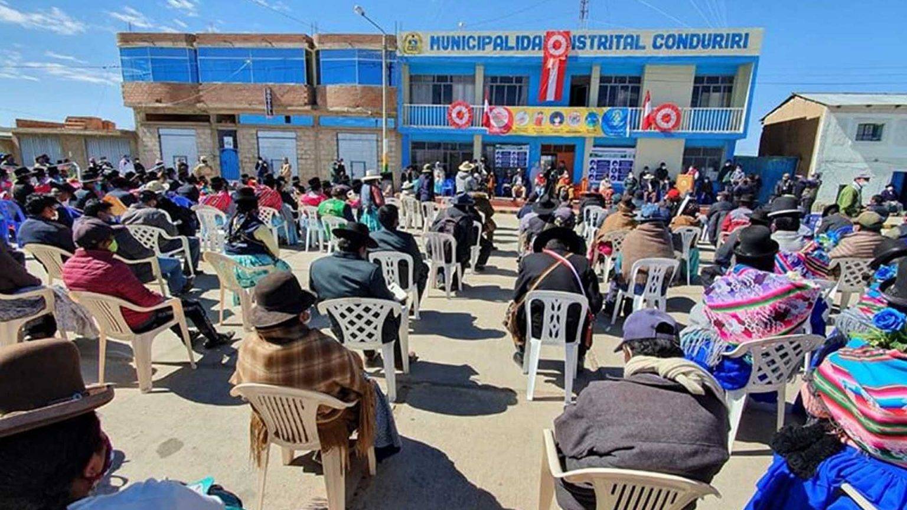
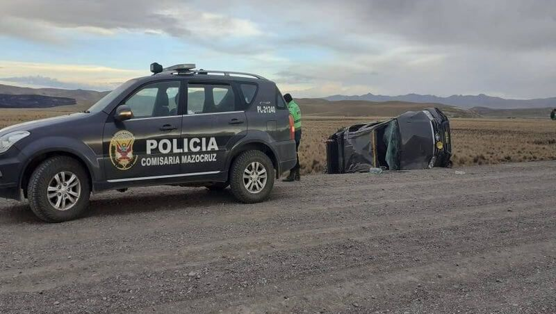
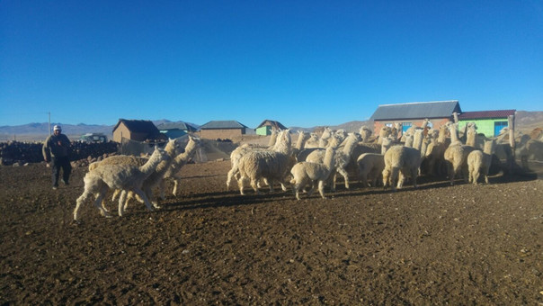
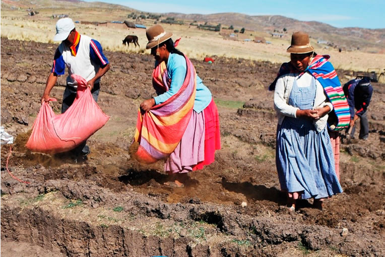
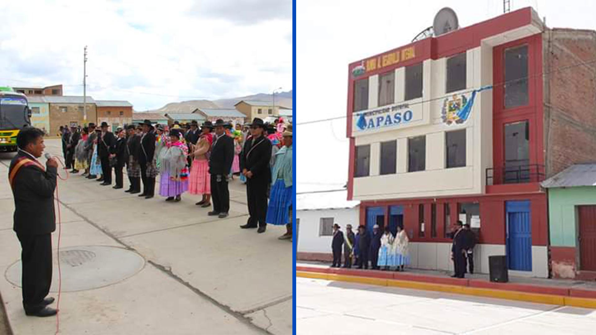

CONDURIRI
NOTICIAS
LUGARES TURISTICOS
SOBRE NOSOTROS
CONTACTOS
Realiza tu busqueda
Acontesimientos de Ultimo Momento

“En el distrito de Conduriri no tenemos subprefecto” manifestó la jueza de primera nominación Julia Montalico Callata...........
Leer mas...
El padre de familia de la Institución Educativa Primaria 70610 del distrito de Conduriri (El Collao), Roberto Ventura, informó que hasta el....
Leer mas...

Población pide urgente intervención a Provias Nacional y el Gobierno Regional para su mantenimiento. El teniente gobernador de la....
Leer mas...

Familias de Conduriri viven a 15 grados bajo cero Conduriri es uno de los cinco distritos que conforman la provincia de El Collao en la región.....
Leer mas...

Escasez de agua provoca la mortandad de alpacas y ovinos en zona alta de Conduriri La ausencia de lluvias ya viene generando estragos......
Leer mas...

Pobladores de los distritos de Capaso y Conduriri piden designación de subprefecto distrital Desde el año 2018 el distrito fronterizo de......
Leer mas...